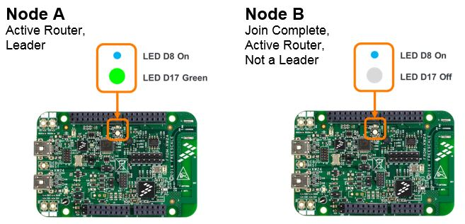

Note: the images used in the detailed steps assume using FRDM-KW24D512 platform for Node
A and Node B. Tables at the end of the section show images of initiating the multicast
action also for the other supported boards.
To send a multicast LED control CoAP message using a board button switch
action:
- LED control works only if devices are already joined to the network. All following
steps assume the steps of joining Node B to the network created by Node A have been
performed as shown in section Steps to Create a Network and Joining a New Device.
Node A and Node B should be Active Routers.

- On Node B: press button switch for LED OFF (SW4 for FRDM-KW24D512) to ensure
the specific LED used to show control actions turns off
- On Node A: note that an LED turns off if it was on (the RGB LED D17 turns off
on FRDM-KW24D512)
- On Node B: press button switch for LED ON (SW3 for FRDM-KW24D512)
- On Node A: note LED turns on (RGB LED D17 turns on to a random RGB hue on
FRDM-KW24D512)
- On Node B: press switch button for LED OFF again (SW4 for
FRDM-KW24D512)
- On Node A: note LED turns back off
- On Node A: repeat the same steps above using board switches for LED OFF and
LED ON and note the effects in the other direction taking place on Node B
- The sender of the control messages generates a different RGB LED hue included when
it sends each LED ON message. As a result, nodes receiving the message with RGB LEDs
on-board change their LED hue each time the LED ON action is exercised
- If 3 or more boards are used, note the effect of the LED control takes place on all
the devices on the network indicating multicast messaging is being used